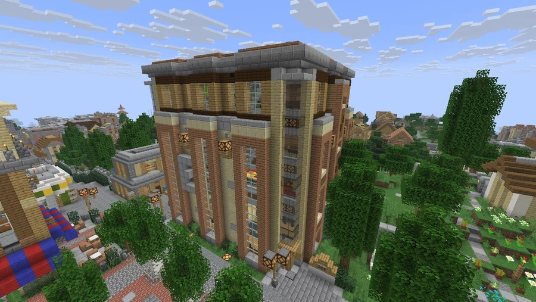

Broville Embassy Center
A diplomatic representation center included in Broville’s building inventory.
Location and purpose
Broville Embassy Center is a large diplomatic complex in Canals District, at −510, 75, 2090. It is intended to receive representatives of other cities, companies, and outside dignitaries, encouraging meetings and relations with Broville. The building is presented as a symbol of the metropolis’s political influence.
The complex stands between the monumental In Booze We Trust statue and the mayor’s house. This position distinguishes it from City Hall in Downtown.



Established embassies
| Floor | Representation |
|---|---|
| 0 | Hoville embassy |
| 1 | Redlight City |
| 2 | Vertoak City |
| 3 | Melonport |
Relations and diplomatic incidents
The proximity of the embassies to the mayor’s residence is described in the community narrative as a cause of frequent egg-throwing fights between their occupants. That account attributes the deaths of three people, including one Broville resident, to an incident in 2016.
Melonport is presented as the city with the most difficult relationship with Broville. A succession of diplomatic incidents is associated with an attack on Melon Harbor, for which no date is supplied.
See also
Sources and references
- v11.4.4 maps, signs, books and items World records
- Broville Embassy Center · Broville Wiki Community archive
Text adapted and expanded from Broville Embassy Center (contributors and history, revision 4984). Adapted text is available under CC BY-SA 3.0.